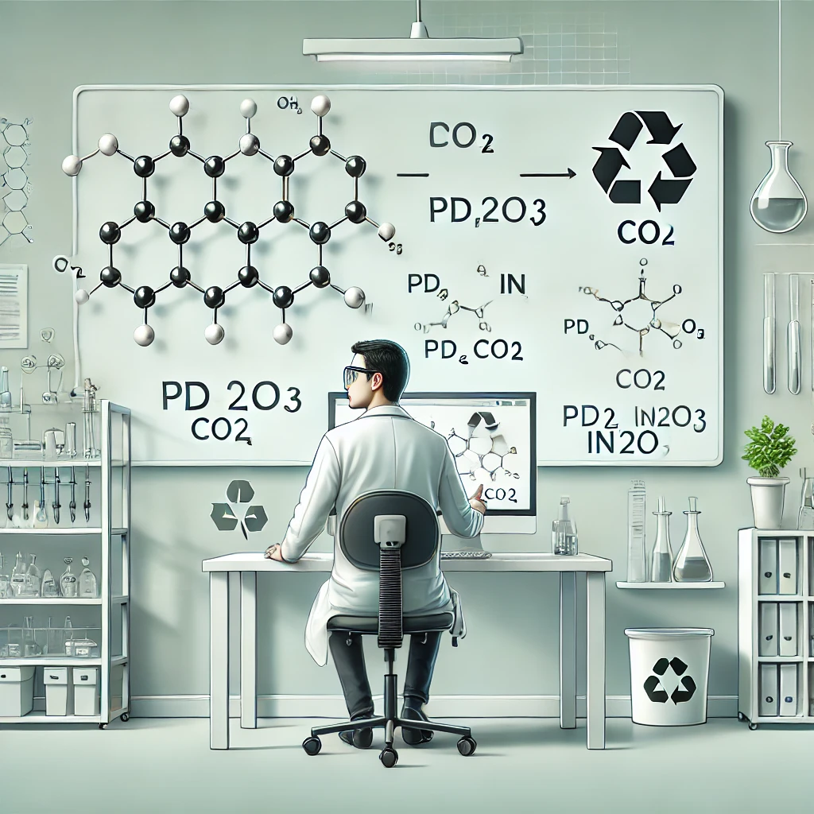

<section id="professional" class="section">
    <div class="container">
        <div class="section-title">
            <h2>Professional Experience</h2>
        </div>
        <div class="card-container">
            <!-- Work Experience 1 -->
            <div class="card">
                <div class="card-img">
                    
                </div>
                <div class="card-body">
                    <h3 class="card-title">Data Scientist Intern</h3>
                    <div class="card-subtitle-container">
                        <span class="card-subtitle-organization">Micron Technology, Inc.</span>
                        <span class="card-subtitle-date">Jul 2023 - Aug 2023</span>
                    </div>
                    <div class="card-subtitle-container">
                        <span class="card-subtitle-name">Advanced Packaging Technology Development</span>
                        <span class="card-subtitle-location">Taichung, Taiwan</span>
                    </div>
                    <p class="card-text">Developed advanced object detection models and computer vision solutions for the Advanced Packaging Technology Development team, delivering significant improvements to quality control processes.</p>
                    <ul>
                        <li>Developed object detection model using PyTorch, OpenCV, and YOLOv8 to measure HBM die alignment shifts with 3 µm spatial and 0.1° angular precision</li>
                        <li>Optimized model training with data labeling and augmentation techniques on 1,000+ 3DCT images, improving spatial precision from 16 µm to 3 µm (81.25%)</li>
                        <li>Eliminated real-time defect analysis costs from $200/hr to $0/hr by replacing scanning electron microscope methods</li>
                        <li>Created comprehensive documentation for non-technical stakeholders to adjust detection sensitivity based on manufacturing requirements</li>
                    </ul>
                </div>
            </div>
            
            <!-- Research Experience 2 -->
            <!-- <div class="card">
                <div class="card-img">
                    
                </div>
                <div class="card-body">
                    <h3 class="card-title">AI Agent for Chemical Process Optimization</h3>
                    <div class="card-subtitle-container">
                        <span class="card-subtitle-organization">Mechanical and AI LAB, CMU</span>
                        <span class="card-subtitle-date">Jan 2025 - Present</span>
                    </div>
                    <div class="card-subtitle-container">
                        <span class="card-subtitle-name">Academic Research Student</span>
                        <span class="card-subtitle-location">Pittsburgh, PA</span>
                    </div>
                    <p class="card-text">Working with Prof. Amir Barati Farimani to develop intelligent AI agents for optimizing chemical process operations through simulation and modeling.</p>
                    <ul>
                        <li>Training AI agents for chemical plants unit operation control using AutoGen and LangChain</li>
                        <li>Utilizing Pyomo and IDAES to construct process flowsheets in Python</li>
                        <li>Creating decision-making frameworks for AI agents in chemical process simulations</li>
                    </ul>
                </div>
            </div> -->

            
        </div>
        <!-- <div class="card-container">
            Research Experience
            <div class="card">
                <div class="card-img">
                    
                </div>
                <div class="card-body">
                    <h3 class="card-title">Maleic Anhydride Process Simulation</h3>
                    <div class="card-subtitle-container">
                        <span class="card-subtitle-organization">Process System Engineering LAB, NTU</span>
                        <span class="card-subtitle-date">Feb 2023 - Dec 2023</span>
                    </div>
                    <div class="card-subtitle-container">
                        <span class="card-subtitle-name">Academic Research Student</span>
                        <span class="card-subtitle-location">Taipei, Taiwan</span>
                    </div>
                    
                    <p class="card-text">Conducting research on optimizing the production process of maleic anhydride through advanced process system engineering techniques.</p>
                    <ul>
                        <li>Developed a comprehensive simulation model for maleic anhydride production using Aspen Plus</li>
                        <li>Analyzed process parameters to enhance yield and reduce energy consumption by 15%</li>
                        <li>Collaborated with a multidisciplinary team to integrate AI-driven optimization strategies</li>
                        <li>Published findings in a peer-reviewed journal, contributing to the field of chemical process optimization</li>
                    </ul>
                </div>
            </div>

            <div class="card">
                <div class="card-img">
                    
                </div>
                <div class="card-body">
                    <h3 class="card-title">CO2 Hydrogenation Catalyst Design</h3>
                    <div class="card-subtitle-container">
                        <span class="card-subtitle-organization">Catalyst LAB, NTU</span>
                        <span class="card-subtitle-date">Mar 2022 - Jun 2023</span>
                    </div>
                    <div class="card-subtitle-container">
                        <span class="card-subtitle-name">Independent Research Student</span>
                        <span class="card-subtitle-location">Taipei, Taiwan</span>
                    </div>
                    <p class="card-text">Conducted independent research under Prof. Chi-Sheng Wu, focusing on developing efficient catalysts for CO2 conversion to valuable chemicals.</p>
                    <ul>
                        <li>Participated in weekly research discussions to develop and refine catalyst design strategies</li>
                        <li>Developed experimental skills in catalyst synthesis, property analysis, and performance testing</li>
                        <li>Focused on Pd-In2O3 catalysts to enhance methanol production efficiency</li>
                        <li>Applied data analysis techniques to correlate catalyst properties with performance metrics</li>
                    </ul>
                </div>
            </div> -->
            
        <!-- </div> -->
    </div>
</section>
